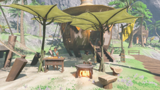

Our coastal region isn't just for seeing, it's for exploring all that's possible with our new natural history side quest! Come see how our very village was built from the ground up, the local legends that wash up upon the beach, and the secrets from the past. Explore our historical ruins with our guide Garini, an expert naturalist. Wanna learn more about the cave that hides secrets? Come book with us and get an all-inclusive tour!

There's not just fun at our Lurelin Village, take a boat with one of our skilled fishermen to the Private island of Eventide! This island is remote, all untouched by common hylians as we know them today. Only the most sophisticated monks traveled to this island as final training grounds many eons ago. Our island is located in the southeast of the Necluda Sea. Take part in the exploration of Eventide and even pick up your own souvenir! As mentioned before, this is a remote island where animals reside. Please do your best not to disturb or cause them any harm.

With all the exploring and fun you're having, it's always best to have a full stomach, right? Go to Kiana and Kinov for the best Lurelin village supper all of Hyrule has ever tasted! Choose from some of our most popular dishes, such as Porgy Menuiere, known for its benefits for digestion and boosting mobility! Come try the limited-time Noble Pursuit imported from Gerudo towns' Noble Canteen.

Here at the village resort, we're not just any normal getaway; we're a place where you can find love. North of our coastal home, you can find the infamous Tuff Mountain, where many tourists go to travel to Lover's Pond. It is said that this very place can bring two souls who long for each other together. Love Pond is popular among Gerudo women because it has a 99.9% success rate in helping you find your true love. This area is free to explore, and maybe you, too, can find your lover in paradise! See the Gerudo Ashai for directions. Try not to confuse Ebon Pond for Lover's Pond.